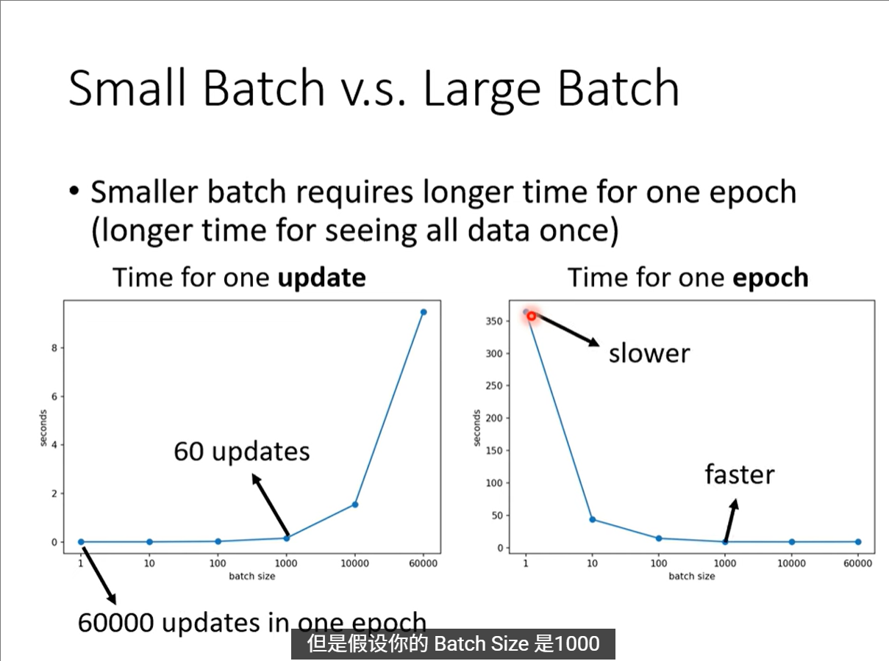
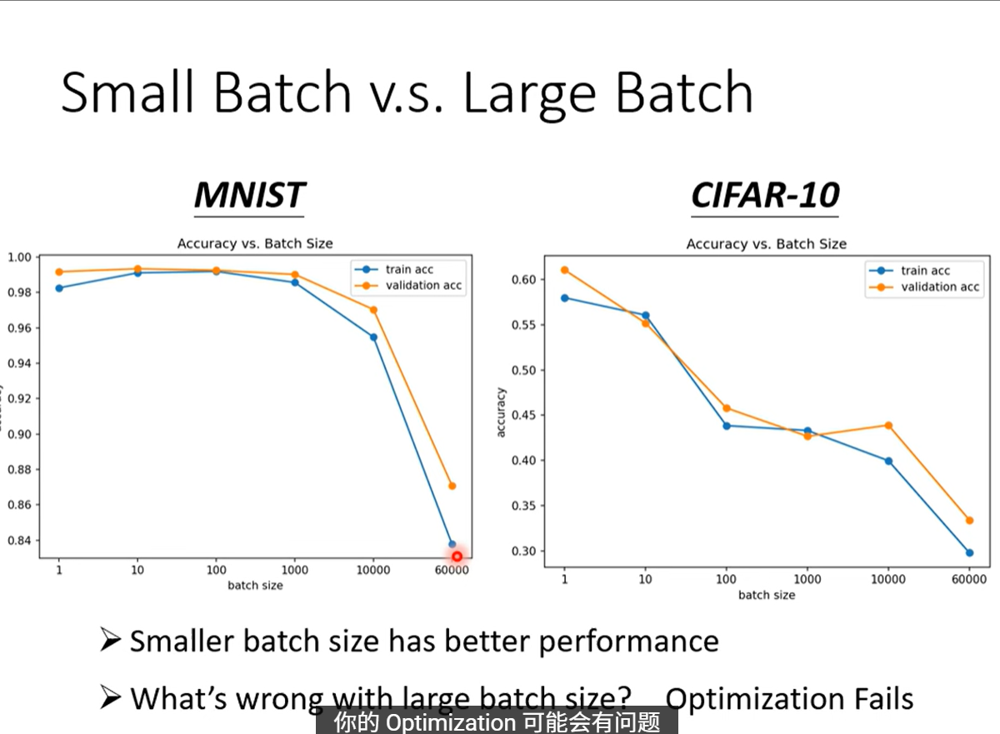
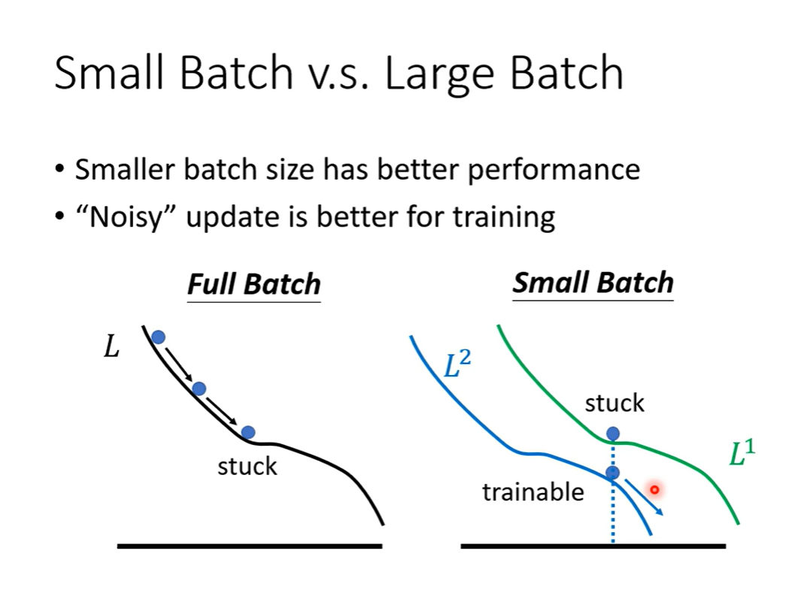
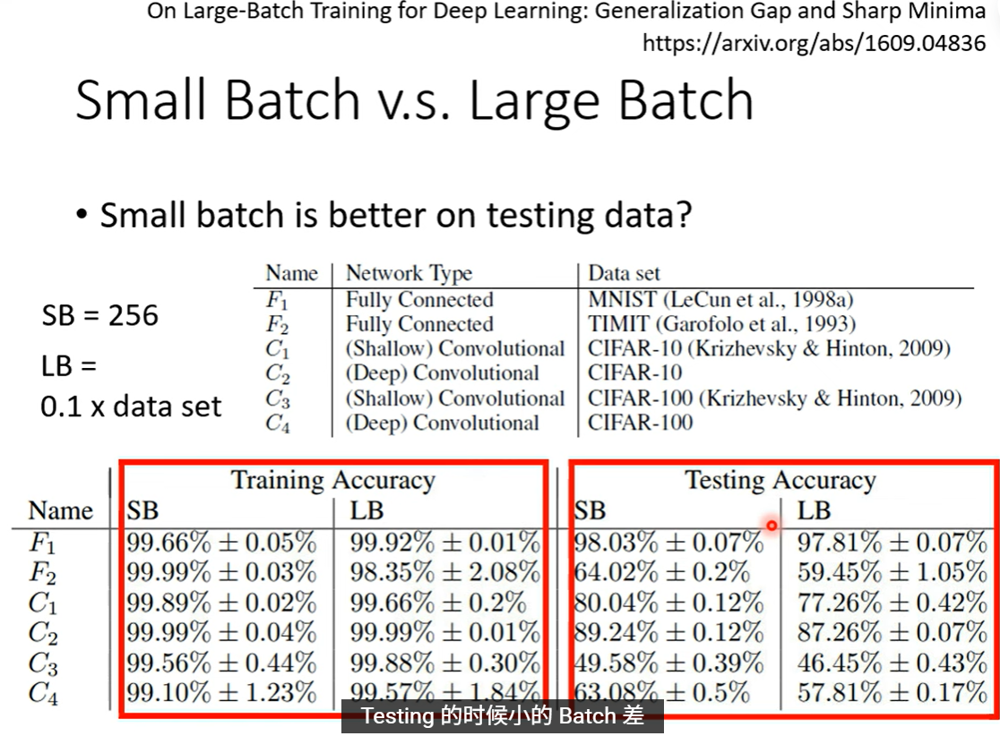
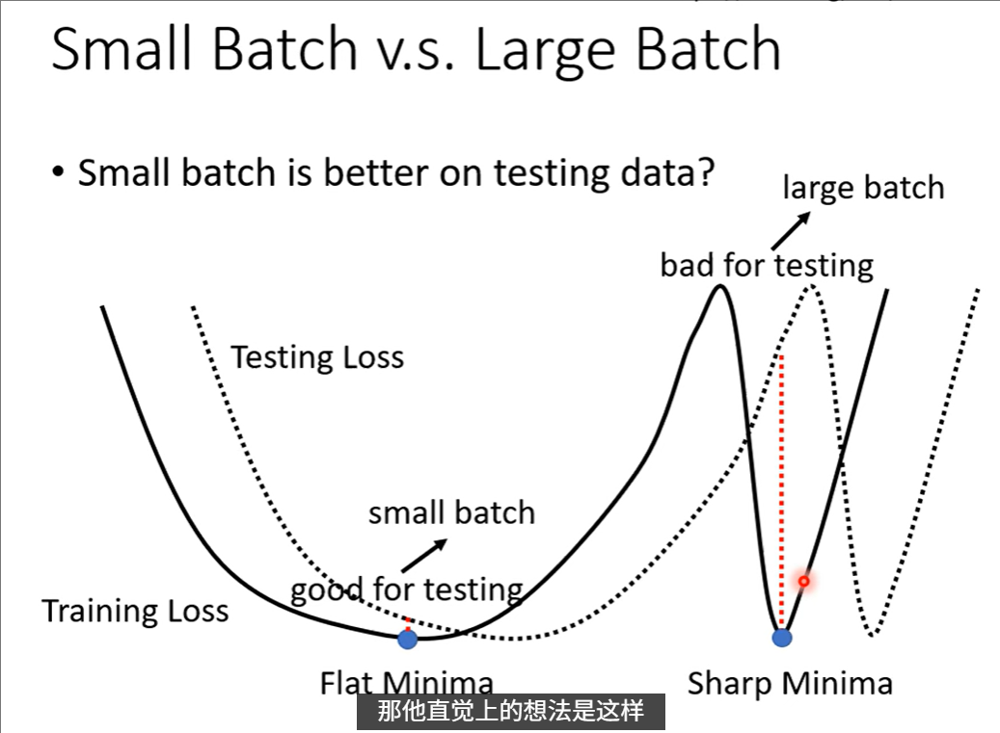
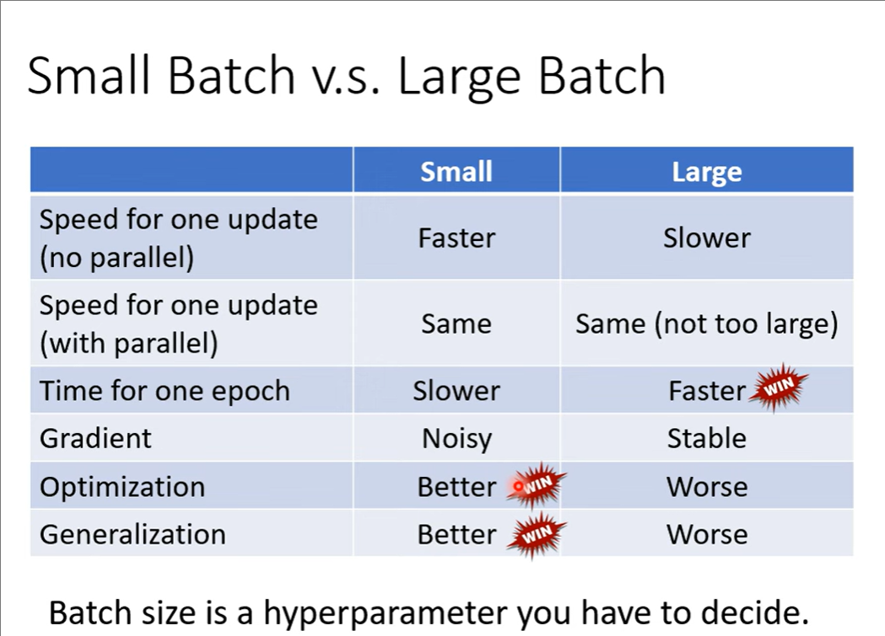
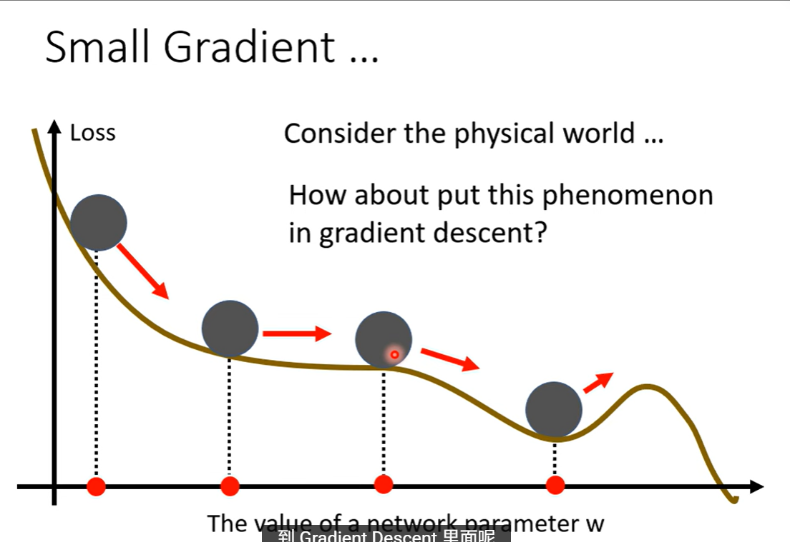
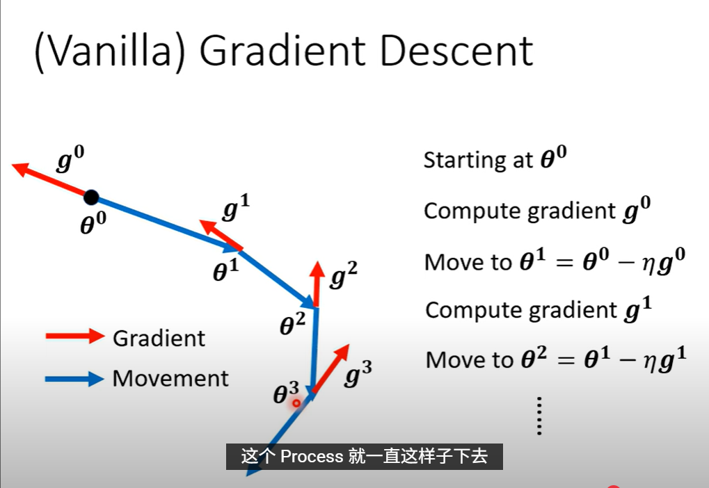
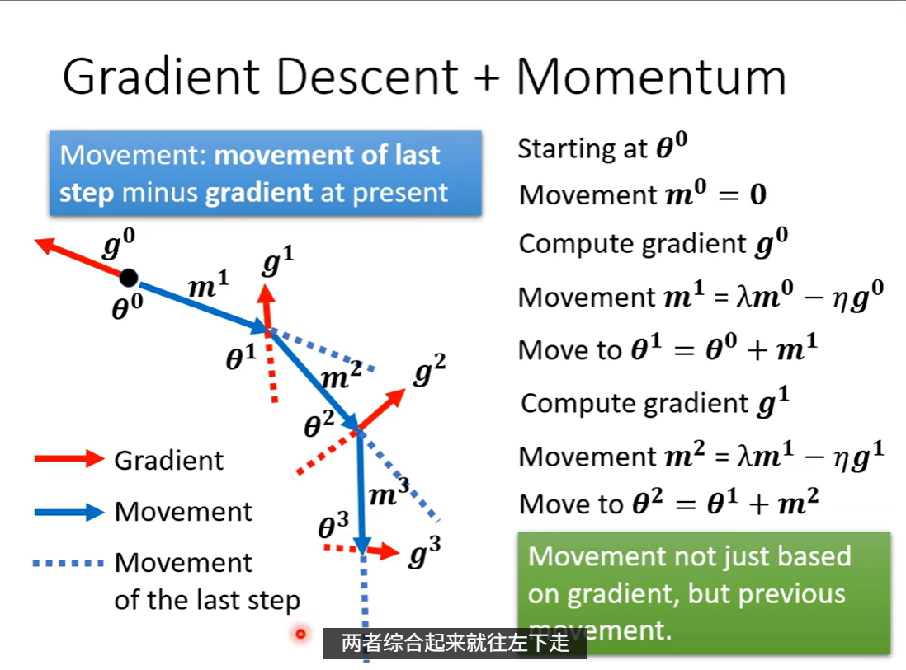
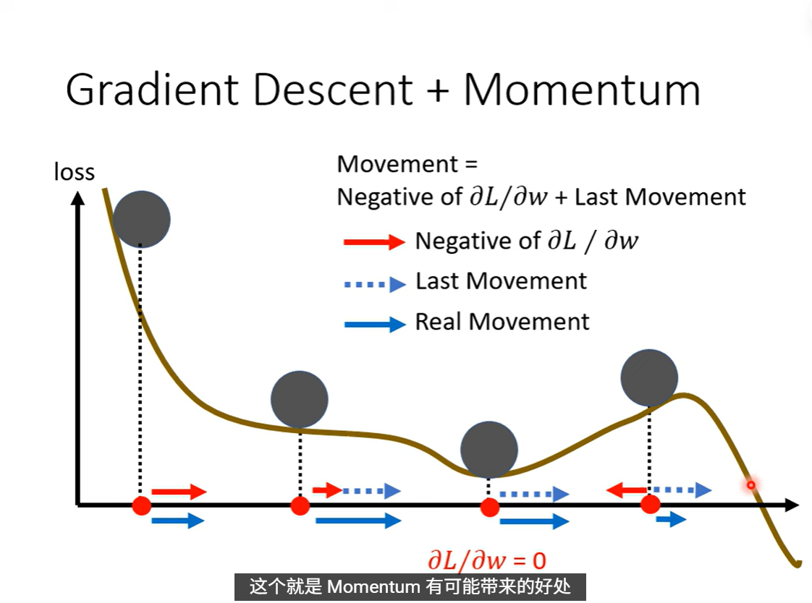

Batch
Batch size
Batch size很大例如等于N时（full batch）在看完整个数据集后优化的方向比较有效但是时间成本大（不考虑平行计算）；如果是极端情况 一个样本更新一次 则更新一次时间快（看完数据集所有数据时比较慢）但是方向比较noisy。
- GPU的并行运算使得大的batch的一次计算的时间并没有很长
- 大的batch一般更加有效
- 小的batch会更加noisy

- 使用大的batch size可能导致结果比较差，原因是optimization出错，不是overfitting（同一个模型同一个数据集按道理是可以实现同样效果的）。

- 使用full batch或者较大的batch size，当遇到saddle point时候就不再能够减少loss，但是使用小batch的时候会遇到多个batch，减少同时出现saddle point的概率，即使出现了部分saddle point，依然能有很多batch提供正确的优化方向。

小的batch在testing的时候效果更差
小batch size容易overfitting的原因：
- 梯度噪声大：小批次计算的梯度更不稳定，模型可能会过度拟合这些噪声梯度
- 更新频繁：每个epoch内参数更新次数多，给了模型更多机会去记忆训练数据的细节
- 泛化能力弱：小批次可能无法很好地代表整个数据集的分布特征
大batch size的特点：
- 梯度更稳定：大批次能提供更准确的梯度估计，训练过程更平滑
- 泛化性能通常更好：因为梯度计算基于更多样本，更能反映数据的整体规律
- 但可能陷入尖锐的局部最优解：这种解在训练集上表现好，但泛化能力差

假设是出现了样本不匹配
- 可以理解为大的batch size更加容易的找到sharp minima
- 小的batch size 会更加容易跳出“峡谷”，但是不容易跳出盆地

- 总结

momentum
参考物理世界的惯性

vanila（一般的） gradient descent
- 就是根据梯度反方向差*学习率

gradient descent + momentum
- 不仅仅是梯度的反方向，会考虑前面所有gradient的总和

